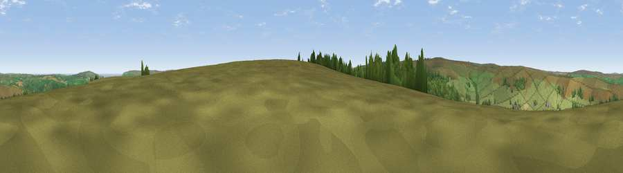

Viewpoint near Glaisdale
#11235 in England · top 27% of its area beats it · near GlaisdaleWhere it is
The exact computed spot (NZ 76325 02825). Click the marker for map links.
The view, rendered

A 360° render of this exact spot computed from the terrain model, tree cover and land cover — summer colours, afternoon light, calibrated against photographs of famous viewpoints. Real trees, hedges and buildings will differ in detail.
The panorama
Grey silhouette: terrain skyline in each direction (720 bearings, Earth curvature and refraction included). Dashed green: skyline with trees (+15 m) and buildings (+8 m) as obstacles. Blue strip: how far the ground is visible on each bearing.
Where the view opens
Wedge length = distance to the farthest visible ground on that bearing (vegetation-aware). Rings at 10, 25 and 50 km.
What fills the view
83% grassland · 15% woodland · 1% cropland
Angular shares of the visible panorama (visual magnitude), not map area. Landscape diversity 0.23 (0–1 Shannon).
Key numbers
More beautiful places nearby
The staircase of upgrades: each row has a higher view potential than everything closer. Driving times are estimates from straight-line distance, calibrated against real road routing — check an actual route before setting out.
| Place | Direction | Drive | Score |
|---|---|---|---|
| Peat Hill | WSW · 4 km | ~9 min | 72.5 |
| Danby Beacon | NNW · 7 km | ~14 min | 73.4 |
| Viewpoint near Eskdaleside | ENE · 9 km | ~18 min | 78.4 |
| Viewpoint near Eskdaleside | ENE · 9 km | ~18 min | 80.7 |
| Viewpoint near Lythe | NNE · 14 km | ~26 min | 81.3 |
| Beacon Hill | NNE · 15 km | ~27 min | 82.3 |
| Viewpoint near Easington | N · 17 km | ~29 min | 86.9 |
| Viewpoint near Easington | N · 17 km | ~30 min | 90.2 |
54.41515, -0.82540 · source: screening · position refined by local search. Computed location — check access rights before visiting.